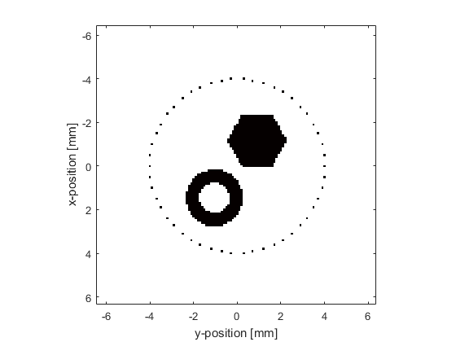
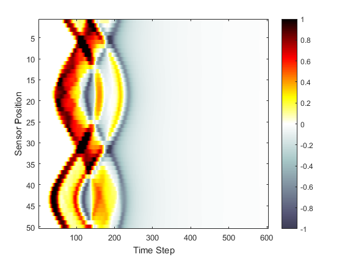

Loading External Image Maps Example
This example demonstrates how to assign an external image to the initial pressure distribution for the simulation of an initial value problem within a two-dimensional homogeneous propagation medium. It builds on the Homogeneous Propagation Medium Example.
Contents
Loading the image map
The initial pressure distribution source.p0 used by kspaceFirstOrder2D is simply a two-dimensional matrix filled with arbitrary numeric values. Consequently, any data may be used to define this distribution. Here an external image map is loaded using loadImage. This function converts an external image into a matrix, sums the colour channels (for colour images), and scales the pixel values from 0 to 1.
% load the initial pressure distribution from an image and scale the
% magnitude
p0_magnitude = 3;
p0 = p0_magnitude * loadImage('EXAMPLE_source_one.png');
The medium discretisation is again performed by calling kWaveGrid with the required grid dimensions, after which resize is used to scale the loaded image map to the required dimensions.
% create the computational grid Nx = 128; % number of grid points in the x (row) direction Ny = 128; % number of grid points in the y (column) direction dx = 0.1e-3; % grid point spacing in the x direction [m] dy = 0.1e-3; % grid point spacing in the y direction [m] kgrid = kWaveGrid(Nx, dx, Ny, dy); % resize the image to match the size of the computational grid and assign % to the source input structure source.p0 = resize(p0, [Nx, Ny]);
The simulation is invoked in the same way as in the previous examples. A plot of the initial pressure distribution and sensor mask, and a visualisation of the recorded pressure field are shown below.
 